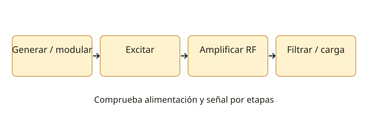

Lección 11 de 16
Transmisores y diagnóstico por etapas
Sigue la señal desde el oscilador y el micrófono hasta la carga, y aprende a localizar fallos sin aumentar potencia a ciegas.
Cadena de señal
Un transmisor genera una señal de RF, incorpora la información, la amplifica y entrega energía a una carga mediante una red de salida y filtrado. Los bloques concretos dependen del modo: oscilador, buffer, mezcladores o multiplicadores, modulador, excitador, amplificador final y filtro. La alimentación y control de polarización sostienen cada etapa. Una avería en un bloque anterior puede parecer un problema de potencia final.
Separar, excitar y multiplicar
El buffer desacopla el generador de la carga. El driver entrega la excitación necesaria a la etapa final; más excitación que la prevista puede producir distorsión o daño. Un multiplicador selecciona un armónico entero y necesita filtrado. Un mezclador crea productos de suma y diferencia. Sigue las frecuencias por cada etapa y marca el producto deseado antes de interpretar un esquema.

Modulación y amplificación final
En SSB y AM lineal, la envolvente debe conservarse: una etapa final sobreexcitada produce intermodulación y ocupación fuera del canal. En FM o CW pueden emplearse etapas de mayor eficiencia bajo condiciones adecuadas. La potencia eléctrica de entrada no coincide con la RF de salida: η = PRF/PDC. La diferencia se convierte principalmente en calor. Comprueba las corrientes y temperaturas permitidas y la adaptación de carga.
Sintonización, adaptación y filtrado
La red de salida puede transformar impedancia y seleccionar frecuencia. Un acoplador presenta una impedancia adecuada al transmisor, pero no convierte automáticamente una antena ineficiente en eficiente ni elimina pérdidas de una línea desadaptada. Un filtro pasa bajos o pasa banda reduce armónicos; su potencia, frecuencia y carga deben ser adecuadas. La neutralización compensa realimentación indeseada en determinadas etapas; no es un ajuste universal presente en todas las radios.
Oscilaciones parásitas y manipulación
Una etapa puede oscilar fuera de su frecuencia prevista por acoplamiento, alimentación o disposición física. Los desacoplamientos, blindajes y supresores se diseñan para ese caso. En CW, la forma de los flancos de manipulación limita clics; un relé o secuencia mal ajustada puede cortar la señal o conmutar potencia sin carga adecuada. Los ajustes internos requieren procedimientos y medios de medida apropiados, no movimientos aleatorios de bobinas o trimmers.
Un método para encontrar fallos
Empieza por comprobar alimentación, conectores, modo y controles. Usa una carga ficticia adecuada para distinguir problemas del transmisor y de la antena. Observa si hay excitación y salida por etapas, sin exceder la entrada del instrumento. Compara corriente en recepción y transmisión, caída de tensión y potencia en una carga conocida. Si hay potencia pero audio distorsionado, revisa micrófono, nivel de modulación y linealidad. Registra qué cambiaste y cambia una cosa a la vez.
Resuelve paso a paso
Eficiencia de la etapa
Una etapa toma 13,8 V y 5 A: 69 W eléctricos. Si entrega 40 W de RF, η ≈ 58%. Quedan aproximadamente 29 W de pérdidas; no toda la corriente se convierte en señal radiada.
Seguir frecuencias
Un oscilador a 7 MHz seguido de un duplicador y un triplicador puede entregar 42 MHz si cada filtro selecciona ese producto: 7 × 2 × 3. Un mezclador con 10 MHz produciría otros productos, como 17 y 3 MHz.
Comprueba lo aprendido: La radio entrega potencia normal en carga ficticia y reduce salida con la antena. ¿Qué revisar primero?
La línea, conectores, adaptación y antena. El resultado orienta el diagnóstico, aunque no prueba por sí solo qué elemento está defectuoso.
Preguntas oficiales de este tema
Selecciona una alternativa y pulsa «Comprobar respuesta». Si fallas, podrás ver la respuesta correcta para seguir aprendiendo. Las preguntas con incidencias documentales se muestran solo para consulta y no se califican.
Continúa tu recorrido
Fuentes de estudio: programas técnicos y banco SUBTEL, apéndices A–E, versión 06/12/2020, y sus solucionarios oficiales. Reglamentación: Decreto 523, versión 21/06/2013; evaluación: Resolución Exenta 2620/2023. Revisión documental: 11/11/2026. Explicaciones, cálculos y esquemas didácticos de RUFCOM. Consultar documentos oficiales.